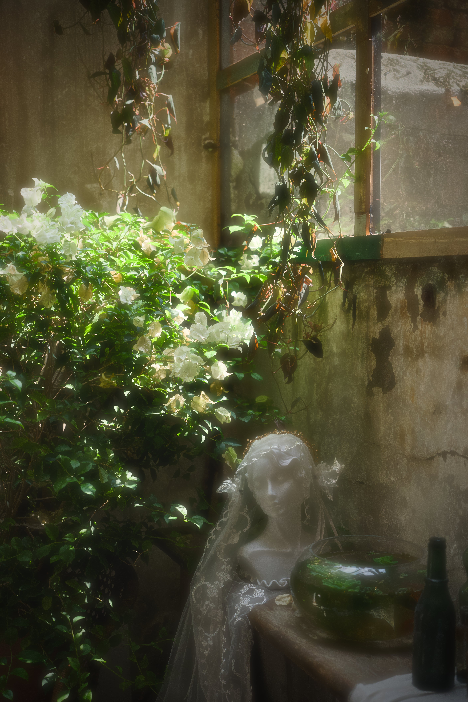
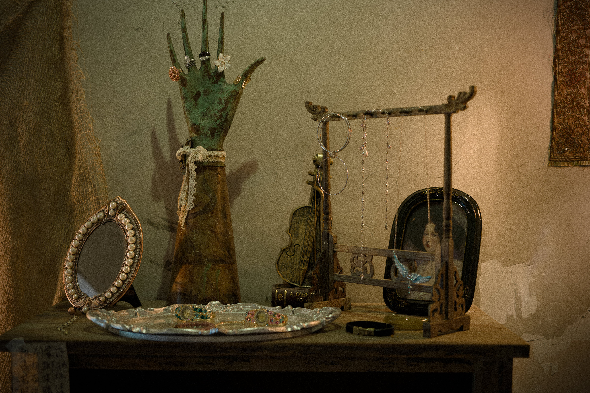
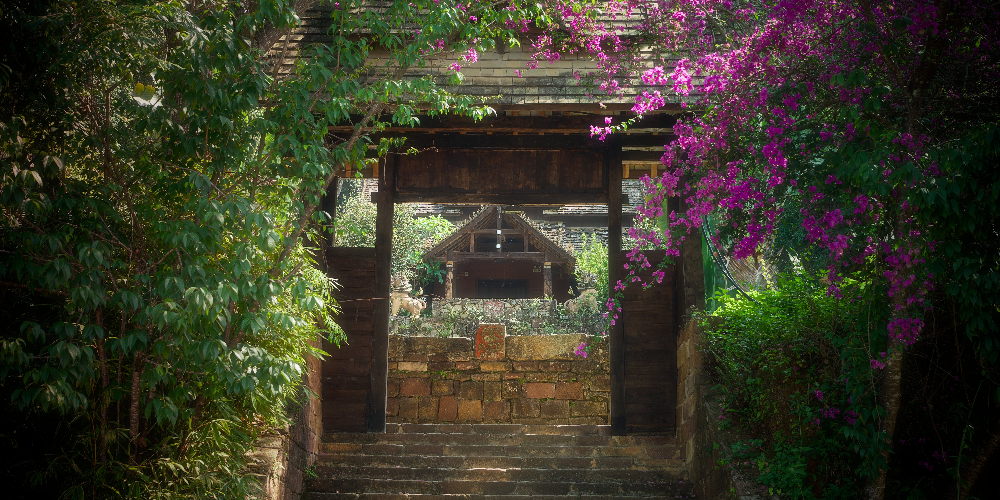

Photography by Kris
Portrait · Documentary · Landscape
Portrait
Selected portrait works.


Documentary
Documentary and street photography.



Landscape
Landscape photography collection.



About
I'm Kris, a photographer documenting people, places and everyday moments.